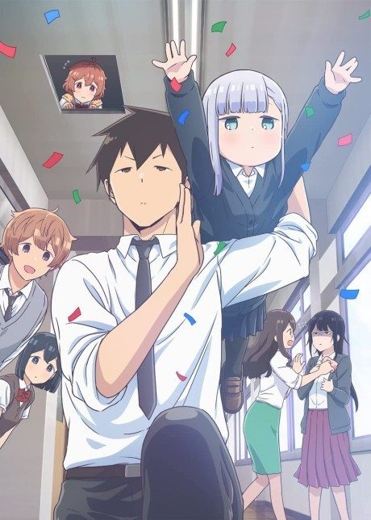
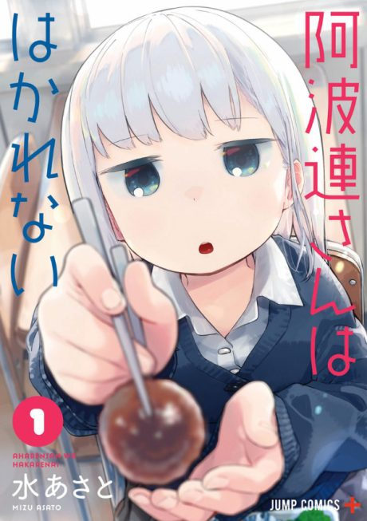
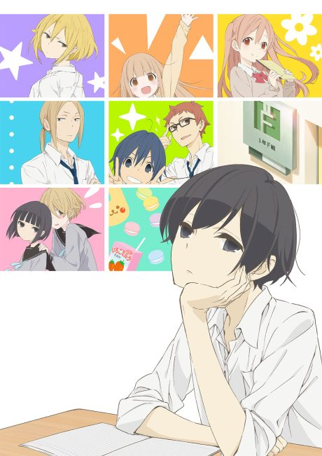
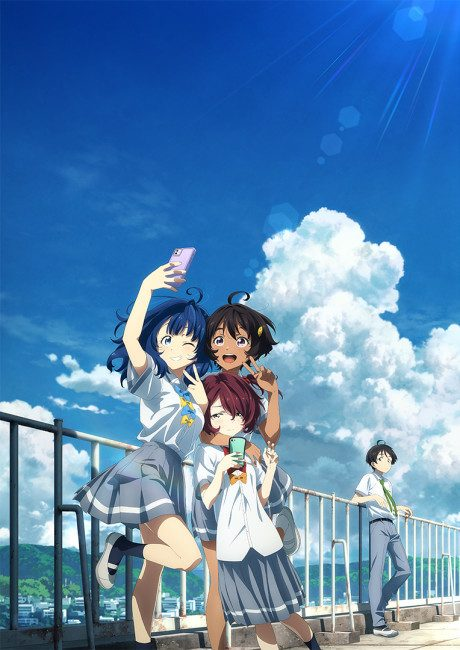
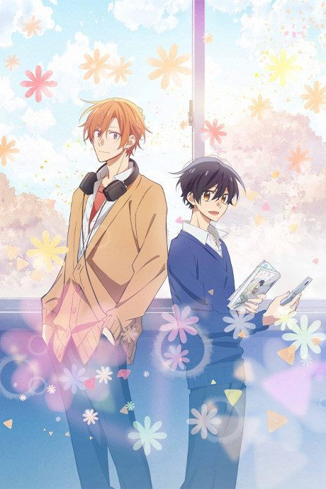
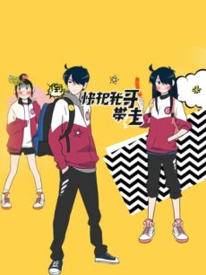

Aharen-san wa Hakarenai
阿波連さんははかれない
Aharen, a tiny and quiet girl, can't judge how close to stand to people, and her new seatmate Raidou has to keep up with her.
After the anime, read the manga from Chapter 121.
7.1AniList score
—Animeter, no votes yet
24episodes, 2 seasons
Rate it or report where you stopped
Is it worth pushing through?
Built from what visitors report across all 2 seasons (24 episodes).
Loading reports…Checking what other people said about this one.
Sign in above with your email to add your report.
More like Aharen-san wa Hakarenai
 Manga Vol. 78.3
Manga Vol. 78.3

Manga Ch. 407.6 Manga Ch. 1148.1
Manga Ch. 1148.1

Manga Vol. 48.0
Manga Ch. 338.1 Manga Ch. 1307.6
Manga Ch. 1307.6
 Manga Ch. 487.8
Manga Ch. 487.8
 Manga Vol. 47.5
Manga Vol. 47.5
 Original7.7
Original7.7

Unclear7.2 Unclear7.7
Unclear7.7
 Manga Ch. 177.2
Manga Ch. 177.2